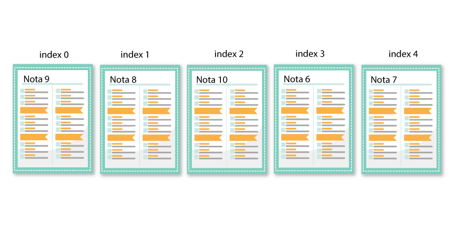
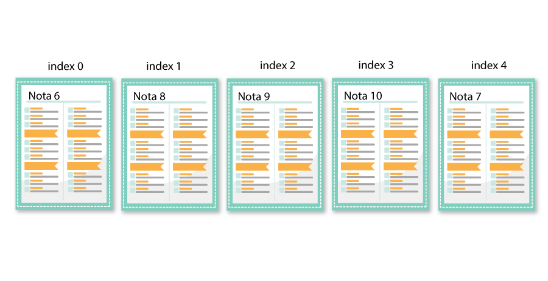
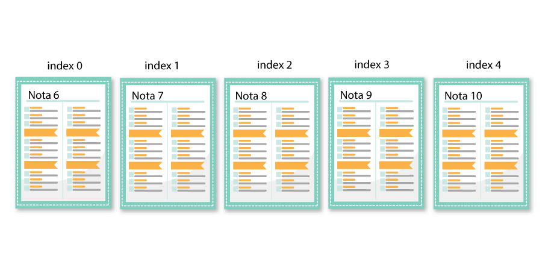

Exemplul 2: Sortarea notelor
Luam in considerare un elev caruia i s-a atribuit aranjarea notelor in ordine crescatoare, obtinute la un test de evaluare. Vom asocia notele obtinute cu o matrice,
deci vom avea o matrice nesortata dupa cum urmeaza:

Mai intai o sa comparam foaia de examen de pe indexul 0 cu celelate foi. Deoarece foaia de pe indexul 1 are o nota mai mica decat nota de pe foaia cu indexul 0,
o vom insera in partea stanga a indexului 0. Acum vom avea o noua
matrice transformata. Dupa cum observam, cele doua note au fost schimbate intre ele:
Acum, vom compara din nou foia de pe indexul 1 cu foaia de pe indexul 2 si vom constata ca foaia de pe indexul 2 este mai mare decat foaia selectata, adica matricea este deja sortata. Matricea noastra va ramane la fel.
Acum le comparam din nou, dar de data aceasta, vom compara foaie de la indexul 2 cu foia de pe indexul 3, deoarece partea din stanga a indexului 2 este deja sortata. Vom observa ca foaia de pe indexul 3 este mai mica decat precedenta,
asa ca o sa cauta in matricea deja sortata anterior si observam ca locul acesteia
este pe indexul 0. Matricea noastra va fi:

Comparam din nou foaia de pe indexul 3 cu foaia de pe indexul 4 si constatam ca nota de pe foaia cu indexul 4 este mai mica decat foaia de pe indexul 3.
Astfel, vom gasi pozitia corecta pentru aceasta nota in stanga(unde avem
deja matricea sortata) si o vom pozitiona pe indexul 1. Matricea noastra, este acum sortata, deci elevul a sortat corect in odine crescatoare toate notele obtinute la testul de evaluare.
